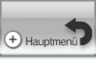
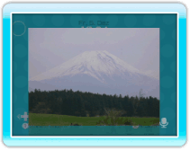

Du kannst Fotos, die du auf einer SD Card oder auf deiner Wii-Pinnwand gespeichert hast, deinen Gesprächspartnern zeigen.
14 |
Zeigen von Fotos |
 |
Sobald das Foto an die Gesprächsteilnehmer übertragen wurde, kann es im Gesprächsraum betrachtet werden. In der Lobby erscheint es jedoch nicht. Wenn der Nutzer, der das Foto ausgewählt hat, BEENDEN oder ZURÜCK wählt, wird das Foto auf den Bildschirmen der anderen Nutzer nicht mehr angezeigt.
|